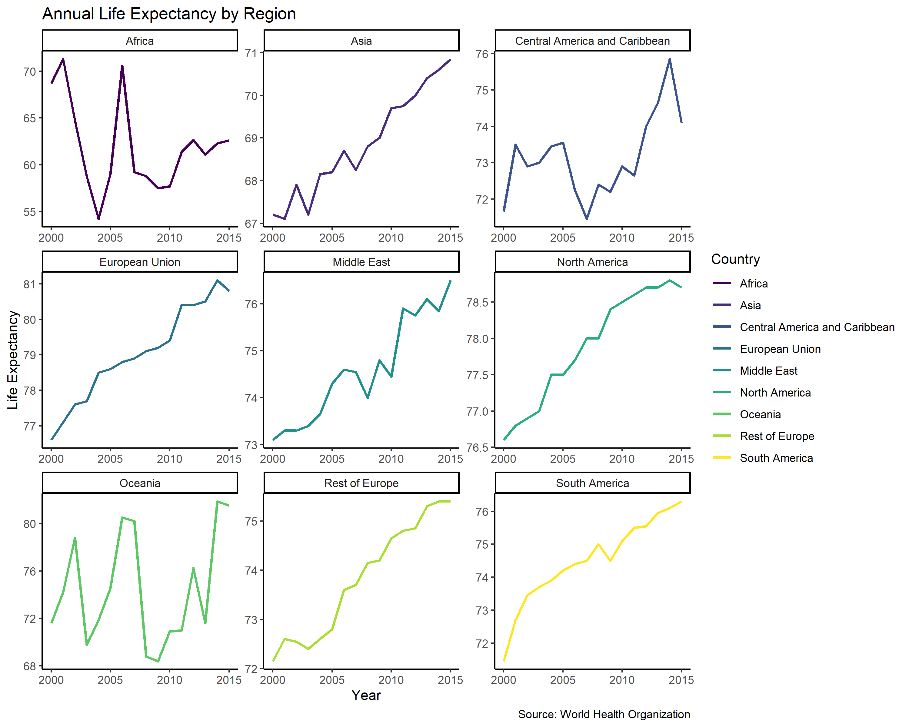
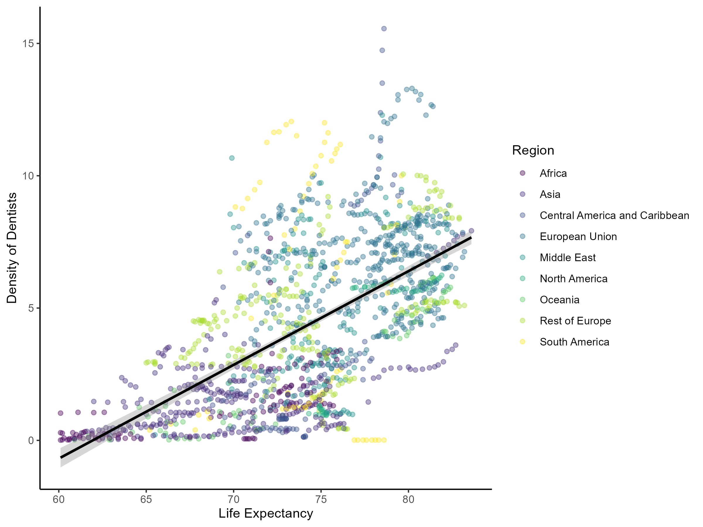
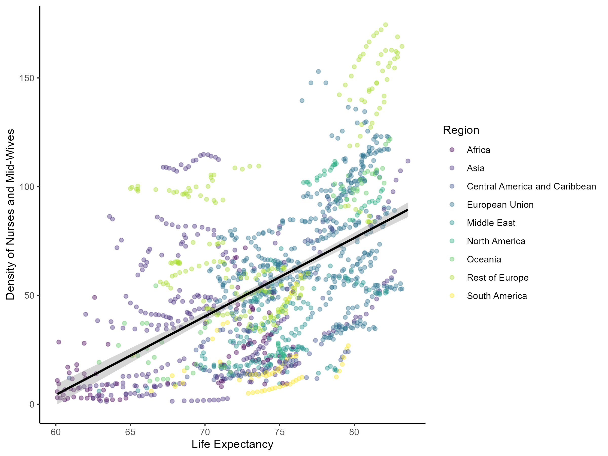

Access to Health Care Workers Increases Life Expectancy
Executive Summary
Problem: The UN is considering using part of its assistance budget to increase global life expectancy. Even before the COVID-19 pandemic, life expectancy was neither stable nor consistent across regions – the Americas experienced declines mid-decade in the 2010s, and even wealthy regions such as the EU and North America followed this trend, suggesting structural gaps in health system capacity. The WHO projects a shortfall of 10 million health workers by 2030, concentrated in low- and lower-middle-income countries, driven by underinvestment in training and increasing migration of health workers to wealthier nations.
Approach: WHO Global Health Observatory data on density of dentists, medical doctors, and nurses/midwives (per 10,000 population) for 179 countries from 2000–2015 were merged with life expectancy data and analyzed using linear regression. Health worker density was modeled against life expectancy. Countries were stratified by a life expectancy threshold of 60 years to separate populations where health worker density is too low to have a measurable effect from those where targeted investment is most likely to produce gains.
Insights: Dentist density has by far the largest effect on life expectancy. For countries with life expectancy at or above 60 years, each additional dentist per 10,000 people adds nearly one full year of life expectancy (eta-squared = 0.39). Each additional nurse or midwife adds approximately 18 days; the effect of medic density is negligible. Maximum global dentist density is just 15 per 10,000 – far below medics (75) and nurses/midwives (202) – meaning dentists represent both the largest effect and the greatest unmet supply.
Significance: Oral disease affects nearly 3.5 billion people worldwide and is the most widespread noncommunicable disease tracked by the WHO – yet dental care is frequently excluded from health coverage and foreign assistance priorities. Investing in dentist density offers a high-leverage, evidence-based path to measurable gains in global life expectancy.
Key Findings
- Each additional dentist per 10,000 people increases life expectancy by 11.64 months; effect size is large (eta-squared = 0.39)
- Nurse/midwife density adds approximately 18 days of life expectancy per additional provider per 10,000 people (eta-squared = 0.07); medic density has negligible impact
- 43 countries across Africa, Asia, and Oceania have health worker density below 1 per 10,000 and have the lowest life expectancy in the world – these are the primary targets for intervention
- Global dentist density peaks at 15 per 10,000, far below medics (75) and nurses/midwives (202), indicating the greatest unmet need is in dental care
Research Question
Does the density of health care workers increase global life expectancy, and which provider type – dentists, medical doctors, or nurses/midwives – has the greatest effect?
Research Answers
Life expectancy varied substantially across regions from 2000 to 2015. The time series below shows that even high-income regions experienced mid-decade declines, pointing to systemic vulnerabilities in health system capacity rather than country-specific shocks.
Figure 1. Annual median life expectancy by region, 2000–2015.

Interpretation: The Americas show a notable decline in the mid-2010s – a pattern shared by EU and North American countries – suggesting that structural deficits in health workforce capacity affect even well-resourced regions. Africa and parts of Asia have the lowest life expectancy across the period.
A critical bifurcation exists in the data: in 43 countries with health worker density below 1 per 10,000 people (primarily in Africa, with additional countries in Asia and Oceania), density is too low to have a measurable effect on life expectancy. These countries – with a combined population experiencing the world’s lowest life expectancy – represent the primary targets for assistance investment aimed at increasing the health workforce. The three scatterplots below show the relationships between each provider type and life expectancy for the remaining countries, where density is sufficient to produce a detectable signal.
Figure 2. Dentist density and life expectancy (countries with life expectancy >= 60 years).

Interpretation: A clear positive relationship between dentist density and life expectancy – each additional dentist per 10,000 people adds nearly one full year of life expectancy. The effect is the strongest of the three provider types and holds across regions.
The magnitude of the dentist effect reflects the often-overlooked severity of untreated oral disease. A single carie (bacterial infection) may result in tooth loss, gum inflammation, and spread to other teeth; over time an abscess can lead to septicemia, a life-threatening condition even where medical care is otherwise adequate. Dental problems have been killing people since the origins of agriculture – as documented in Cohen & Armelagos (2013) – and persist even in populations with access to other foods, as Warinner et al. (2014) show in hunter-gatherers who adopted starchier diets. The WHO Global Oral Health Status Report finds that oral diseases are the most widespread noncommunicable diseases globally, affecting 3.5 billion people – yet dental care is routinely excluded from health coverage and assistance priorities. As Scientific American reports, dental caries is the most common chronic disease in the world, afflicting more than nine in ten Americans and billions globally.
Figure 3. Medic density and life expectancy (countries with life expectancy >= 60 years).

Interpretation: Medic density shows a weak and inconsistent relationship with life expectancy in this dataset, with negligible effect size. This does not mean medics are unimportant – the finding likely reflects that basic medic density thresholds have already been met in this subset of countries, reducing marginal gains.
Figure 4. Nurse and midwifery density and life expectancy (countries with life expectancy >= 60 years).

Interpretation: Nurse and midwifery density has a small but statistically significant positive effect (eta-squared = 0.07), adding approximately 18 additional days of life expectancy per additional provider per 10,000 people.
The linear regression model (fit on countries with life expectancy >= 60) quantifies the contribution of each provider type.
Table 1. Linear regression results: health care worker density as predictors of life expectancy.
| Term | Estimate | Std. Error | t-value | p-value |
|---|---|---|---|---|
| (Intercept) | 64.54 | 0.29 | 221.51 | < 0.001 |
| dentists | 0.98 | 0.05 | 18.21 | < 0.001 |
| medics | -0.05 | 0.01 | -3.52 | < 0.001 |
| nursesMid | 0.04 | 0.004 | 12.14 | < 0.001 |
Interpretation: Dentist density (estimate = 0.98) is the dominant predictor. The negative medic coefficient reflects complex co-linearity and the diminishing returns of medic density in countries that already have adequate medical coverage. The nurse/midwife coefficient is positive and significant, though the effect size is small.
Global dentist density is visually uneven, as the choropleth below shows. Large gaps in Africa are partly due to missing data and partly due to genuine near-zero density, consistent with the 43-country aid target list.
Figure 5. Global dentist density per 10,000 population, 2000–2015.
Interpretation: Dentist density is heavily concentrated in high-income regions. Many African countries show missing values in the WHO data – a data gap that itself signals inadequate health system infrastructure. Targeted investment in these regions aligns directly with the modeled effect sizes.
Next Steps
The model presented here covers 2000–2015 – a pre-pandemic period. Several developments since then may have changed the underlying relationships and warrant re-examination.
The COVID-19 pandemic produced dramatic declines in life expectancy globally and exposed deep structural vulnerabilities in health workforce capacity. As reported in The Lancet, front-line health care workers experienced widespread burnout, chronic stress, and PTSD, and lower-to-middle-income countries faced acute shortages of personal protective equipment alongside increased workload. Post-pandemic models comparing pre- and post-2020 trajectories would be the most useful tool for determining whether the effect sizes reported here remain stable or whether new intervention strategies are needed.
Additional priorities for future analysis:
- Regional-scale modeling – the current model is global; scaling at a regional level may improve predictive accuracy and identify more targeted intervention points
- Re-examination of medic and nurse/midwife effect sizes post-pandemic, as workforce shortfalls anticipated by 2030 may increase their marginal impact
- Investigation of mechanisms linking oral health to systemic mortality outcomes, particularly in contexts where dental care is excluded from universal health coverage
Study Design
Data Source: World Health Organization Global Health Observatory (WHO GHO), downloaded via public API; life expectancy data from a published Kaggle dataset (Gochiashvili).
Data Handling: Three WHO GHO indicators were downloaded via API: density of dentists (HWF_0010), medical doctors (HWF_0001), and nursing and midwifery personnel (HWF_0006), all per 10,000 population. Life expectancy at birth (WHOSIS_000001) was sourced from the Kaggle dataset. Data were filtered to 2000–2015 to align across sources. ISO3 country codes were added and datasets merged on country code and year. Rows with missing life expectancy values were removed. The final dataset covers 179 countries across 16 years. Analysis was stratified into two subsets: countries with life expectancy >= 60 years (model subset) and < 60 years (43-country aid target group where health worker density is below detectable effect thresholds).
Analytical Approach:
- Summarized median life expectancy by region and year and plotted regional time series to characterize global trends
- Tested the distribution of life expectancy using histograms and the
fitdistrpluspackage; confirmed negative skew with a Weibull fit; log and square root transformations did not correct skew, so the untransformed variable was used with acknowledgment of this limitation – the goal is policy inference, not scientific precision - Assessed collinearity among predictors and outcome using a pairs panel (Spearman correlations)
- Plotted scatterplots for the full dataset and for subsets above and below the life expectancy threshold of 60; identified 43 countries as primary intervention targets based on near-zero health worker density
- Fit a linear regression model on the >= 60 subset; assessed residuals and QQ plot – residual patterning consistent with non-normal outcome distribution is present but acceptable for the policy inference goal
- Estimated effect sizes using eta-squared; exported tidy model results to CSV
Project Resources
Repository: github.com/kchoover14/medical-density-longer-life
Data:
- WHO GHO indicators (HWF_0010, HWF_0001, HWF_0006) downloaded via public API; life expectancy (WHOSIS_000001) from Kaggle – both sources included in repo
Code:
medical-density-longer-life.R– WHO API download, data cleaning and merging, time series and scatterplot figures, distribution analysis, collinearity check, linear regression with effect sizes, interactive choropleth map
Project Artifacts:
Life-Expectancy-Data-Updated.csv– source life expectancy data from Kaggle (179 countries, 2000–2015)who_density_life_expectancy_merged.csv– merged WHO density and life expectancy dataset; final analysis inputdentist_density_map.html– interactive choropleth of global dentist densityhealthcare_density_regression_results.csv– tidy linear regression model results (term, estimate, std.error, statistic, p.value)- Figures (n=10): time series, scatterplots by provider type (full dataset, >= 60 subset, < 60 subset)
Environment:
renv.lockandrenv/– restore withrenv::restore()
License:
- Code and scripts © Kara C. Hoover, licensed under the MIT License.
- Data, figures, and written content © Kara C. Hoover, licensed under CC BY-NC-SA 4.0.
Tools & Technologies
Languages: R
Tools: RStudio | Quarto | GitHub Pages
Packages: httr | jsonlite | countrycode | dplyr | tidyr | stringr | ggplot2 | plotly | htmlwidgets | fitdistrplus | car | psych | effectsize | broom
Expertise
Domain Expertise: global health policy | statistical modeling | data visualization | WHO data access
Transferable Expertise: Translates complex multi-source health system data into policy-ready evidence, identifying high-leverage intervention targets from regression findings for international development decision-making.